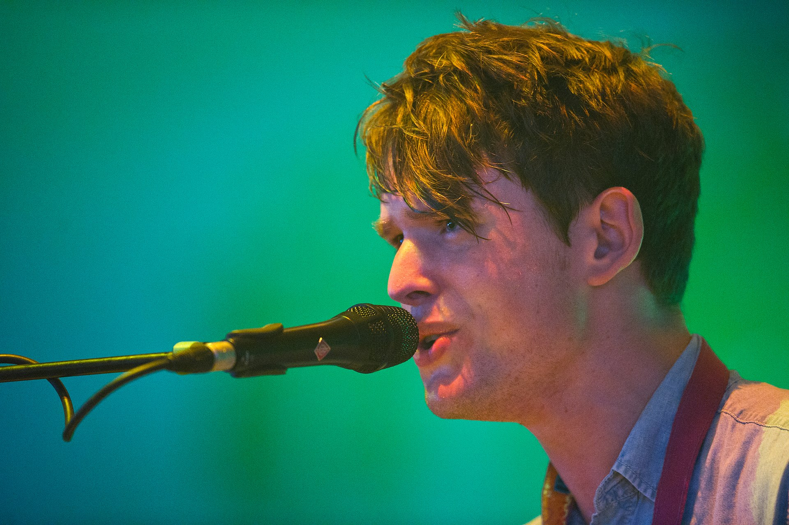

James Blake
Джеймс Блейк (англ. James Blake) — британский певец, музыкант, композитор и продюсер из Лондона.
На сегодняшний день является одним из самых талантливых артистов на британской сцене. В основном играет электронную музыку, но при этом нельзя затолкнуть его в один определенный жанр. Это и soul и dubstep и r'n'b.
Дебютная пластинка "James Blake" выпущенная в феврале 2011 года, была хорошо встречена музыкальными критиками.
Обладатель премии Mercury Prize 2013 за свой второй студийный альбом "Overgrown".
В 2014 году номинировался на премию Grammy в категории "Лучший новый исполнитель".
Резидент BBC Radio 1.
Великий хранитель лейбла "1-800-Dinosaur", на котором выходят его ремиксы под именем Harmonimix.
Блейк выпустил пять студийных альбомов, но есть ещё множество других работ и все они являются совершенно разносторонними.
Популярные песни:
King's Dead
Mile High
You're Too Precious
Are You Even Real?
Life Is Not The Same